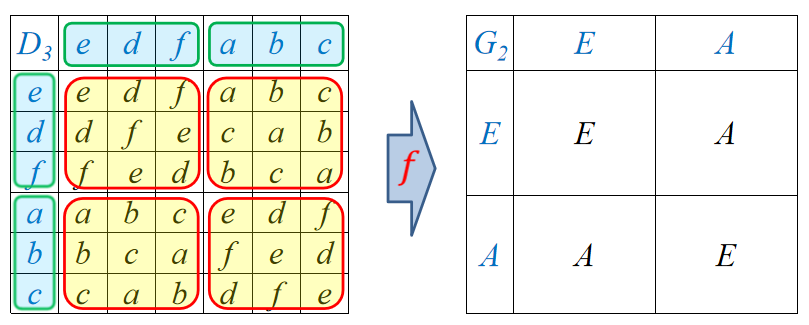

群
群的条件
- 封闭性：∀ gi, gj∈G,gigj=G
- 结合律：∀ gi, gj, gk∈G, (gigj)gk=gi(gjgk)
- 存在单位元（幺元）：∃ e∈G，使得 egi=gie=gi 对 ∀ gi, gj∈G 成立
- 存在逆元： ∀gi∈G,∃gi−1∈G, 使得 gi−1gi=gigi−1=e 成立
群的性质
- 有限群 G 的元素的个数称为有限群的阶，可记为 ∣G∣
- 群中单位元是唯一的
- 群中每个元素的逆元是唯一的
- 群元 a 的阶是满足 an=e 的最小正整数 n
- 如果由群 G 的一个最小的群元集合及其乘法关系可以构造出整个群 G，则这个最小集合中的群元就称为生成元
重排定理
对任意群元 g∈G，有
gG = Gg = G
其中 gG={ggi∣gi∈G}，Gg={gig∣gi∈G}
群中的元素没有发生变化，但元素的顺序发生了变化，因此称为重排定理
子群与陪集
子群
子群的定义
- 群 G 的子集 H 如果在群 G 的乘法规则下也构成群，那么称群 H 为 G 的子群
- 一阶群 E 与 G 是 G 的两个平庸子群。除此之外的子群成为 G 的非平庸子群
- 若 H=G 则称 H 为 G 的真子群或固有子群
子群的判别条件
- 设 H 是群 G 的非空有限子集，那么若 H 在 G 的群乘下是封闭的，则 H 是 G 的子群
- 设 H 是群 G 的非空子集，那么若对 ∀hi,hj∈H，有 hihj−1∈H，则 H 是 G 的子群
陪集
陪集的定义
设 H 是群 G 的子群，任取 gi∈G ，则集合
giH={gih∣h∈H}Hgi={hgi∣h∈H}
分别称为子群 H 的左陪集和右陪集
一般情况下 giH=Hgi
定理
子群 H 的两个左（右）陪集要么完全相同，要么完全不同（没有相同元素）
- 陪集中元素的个数与子群 H 的阶相等
- 除子群 H 以外的陪集不是子群
- 陪集中任意元素都能构造出该陪集
只有在平凡群（阶数为1）中才存在零元，群中的元素不相同，意味着 agi=agj
Lagrange定理
有限群 G 的阶 n 一定能够被其子群 H 的阶 nH 整除，即 n/nH=l ， l 称为子群 H 的指数
n 阶循环群中的每个元素都由 G 中的元素生成，因此 n 阶循环群是 G 的子群，又根据Lagrange定理，n 阶循环群的阶（群元的阶 n）只能是 ∣G∣ 的约数
一个群可按照子群的陪集进行分解：
{G=g1H+g2H+g3H+⋯+glHG=Hg1+Hg2+Hg3+⋯+Hgl
上面的 gi 称为陪集代表元
共轭子群
H 是 G 的子群，对任意 g∈G ，gHg−1 称为 H 的共轭子群。若
gHg−1=H或gH=Hg
也就是左陪集 = 右陪集
则称子群 H 为 G 的正规子群或不变子群
G/H={H,g2H,g3H,⋯,glH}
构成群，称为 G 关于不变子群 H 的商群，商群中的元素是陪集
共轭元与共轭类
等价关系
用 g1⋈g2 表示两个元素的关系，如果这个关系 ⋈ 满足以下三个要求，则称之为等价关系
- 反身性 gi⋈gi
- 对称性 gi⋈gj⇒gj⋈gi
- 传递性 gi⋈gj&gj⋈gk⇒gi⋈gk
共轭元素与共轭类
对群 G 中任意元素 gi,gj ，如果存在 G 中另一元素 g 使得
ggig−1=gj
则称 gi 和 gj 是共轭的（互为共轭元素），记为 gi∼gj
共轭关系是一种等价关系
群 G 中所有彼此共轭的元素组成的几何称为共轭类，简称类
对一个不变的 gi 遍历 g∈G ，可以得到不同的 gj
通常用 [ g ] 表示元素 g 所在的类中元素的集合，类中元素的个数有时称为类的阶。
类的基本性质
- ∀g∈G,gCg−1=C，其中 C 为群 G 的一个类
- 单位元自成一类
- 除单位元外，类不是子群
- 不同类中没有共同元素
- Abel 群中每个元素自成一类
- 同类元素具有相同的阶
- 对于矩阵群，同类元素互为相似矩阵，迹相同
不变子群：∀g∈G,gHg−1=H
类：∀g∈G,gCg−1=C
不变子群和类都满足这个形式
类中的所有元素相互共轭，且一个类中必须包含所有共轭元，不能缺漏
定理一：若 X 为若干完整类的集合 X=C1+C2+⋯=∑kCk，g 是群 G 中任意元素，则有 gXg−1=X 成立。反之，若有 G 的子集 X 满足 gXg−1=X ，则集合 X 必包含若干完整的类。
推论：不变子群必然包含若干完整的类；反之，包含若干完整类的子群必是不变子群。
也就是说，不变子群是若干类的无交并，这些类完全覆盖不变子群，没有遗漏任何元素。
不变子群和类的关系：不变子群是群，满足封闭性和单位元等；类是等价关系，满足传递性等，并且全体元素互相共轭。
定理二：有限群 G 的阶 n 能被其中任意一个类的阶 nc 整除。
证明封闭性的方法：所有元素满足群乘定义
群的同态与同构
同态与同构的定义
设存在一个从群 G 到群 G′ 的满映射 f:G→G′ ，即对 ∀g∈G 其像 f(g)∈G′，且对 ∀g1,g2∈G 满足如下关系
f(g1)f(g2)=f(g1g2)
那么这个映射就叫做从群 G 到群 G′ 的一个同态。如果这个映射还是个双射（一对一且无遗漏），则称之为同构，记为 G≅G′。
- 按照定义，映射不可能是多对一
- 若记群 G 的群乘标记为 ∗，群 G′ 的群乘标记为 ∘，则同态的定义应该写为
f(g1)∘f(g2)=f(g1∗g2)
- 同构是等价关系，同态是非等价关系
如下图所示，若 D3={e,a,b,c,d,f}，G2={E,A}，则 {a,b,c}↦A，{e,d,f}↦E，定义域的阶∣G∣> 值域的阶 ∣G′∣，体现了多对一的特点

同态的多对一是均匀的
同态核
同态核：群 G 到 G′ 的同态 f 中，群 G 中被映射到 G′中单位元的那些元素的集合，称为该同态的核，简称同态核，数学定义为 {g∣g∈G&f(g)=E∈G′}
- 群 G 中的单位元 e 一定在同态核中
- 在同态中，逆元的像等于像的逆元
同态定理
同态定理：设 f:G→G′ 是群 G 到群 G′ 的同态，则其同态核 K 构成 G 的不变子群，且商群 G/K 与群 G′ 同构：G/K≅G′
Cayley定理
Cayley定理：任意 n 阶群都同构于置换群 Sn 的某个子群
任意 n 阶矩阵都可通过在左边和上方加一行一列全为 0 的元素扩充为 n+1 阶矩阵，det(n+1)=0，若不为零的矩阵块为单位矩阵，则 n+1 阶矩阵与自身相乘后得到的还是自身。
群的直积
直积
直积（外直积）：设 G1 和 G2 是两个群，则群的直积 定义为
G1⊗G2={(g1,g2)∣g1∈G1,g2∈G2}
其群乘定义为
gg′=(g1,g2)(g1′,g2′)=(g1g1′,g2g2′)
易证 G1⊗G2 在上述乘法下构成群。
若 G1 的群乘标记为 ∗，G2 的群乘标记为 △，直积的群乘标记为 ∘，则直积的群乘定义应写为
gg′=(g1,g2)∘(g1′,g2′)=(g1∗g1′,g2△g2′)
可以看出 G1 和 G2 可以是两个毫无关系的群，直积的阶等于两个群阶的乘积：∣G1⊗G2∣=∣G1∣∣G2∣
直积群
直积群（内直积）：设 G1 和 G2 是两个群，具有相同的群乘定义，且：
1.除单位元外没有共同元素
2. ∀g1∈G1,∀g2∈G2，有对易 g1g2=g2g1
那么 G={g1g2∣g1∈G1,g2∈G2} 构成群，称为 G1 和 G2 的直积群，记为 G1⊗G2。
- 直积群的阶 ∣G∣=∣G1∣∣G2∣
- G1 和 G2 都是 G 的不变子群
- G/G1≅G2，G/G2≅G1
直积群的构造：如果 G1 和 G2 都是 G 的不变子群，且只有单位元是共同元素，并且 G 中任意元素 g 可以唯一地写为 g=g1g2，（g1∈G1,g2∈G2），那么 G 就是 G1 和 G2 的直积群：G=G1⊗G2
直积群是外直积的特殊情况
半直积群
半直积群：设 G1 和 G2 是两个群，具有相同的群乘定义，且：
1.除单位元外没有共同元素
2. ∀g2∈G2 有 g2G1=G1g2
那么 G={g1g2∣g1∈G1,g2∈G2} 构成群，称为 G1 和 G2 的半直积群，记为 G1⋊G2。
- 直积群的阶 ∣G∣=∣G1∣∣G2∣
- G1 和 G2 都是 G 的子群，但只有 G1 是不变子群
- G/G1≅G2，但 G2 无法做商群
半直积群的构造：如果 G1 和 G2 都是 G 的子群且 G1 是不变子群，只有单位元是共同元素，并且 G 中任意元素 g 可以唯一地写为 g=g1g2，（g1∈G1,g2∈G2），那么 G 就是 G1 和 G2 的半直积群：G=G1⋊G2。
半直积群的条件相比直积群更宽松
- 指数为 2 的子群必定是不变子群
- 在同态中，逆元的像等于像的逆元